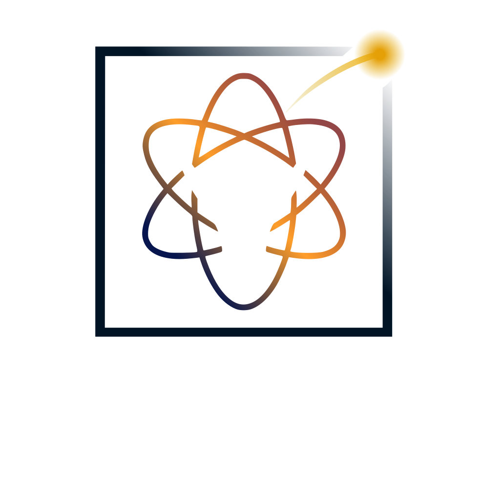
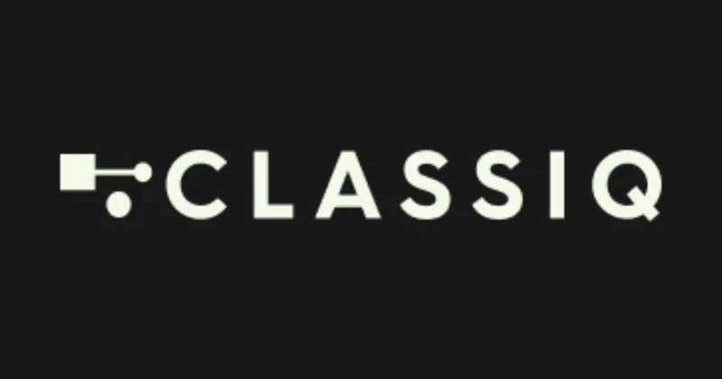
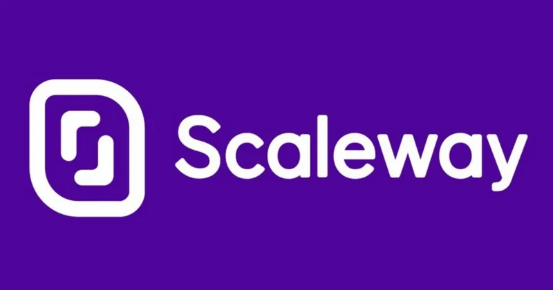
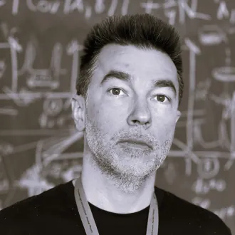
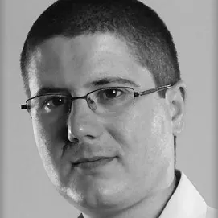
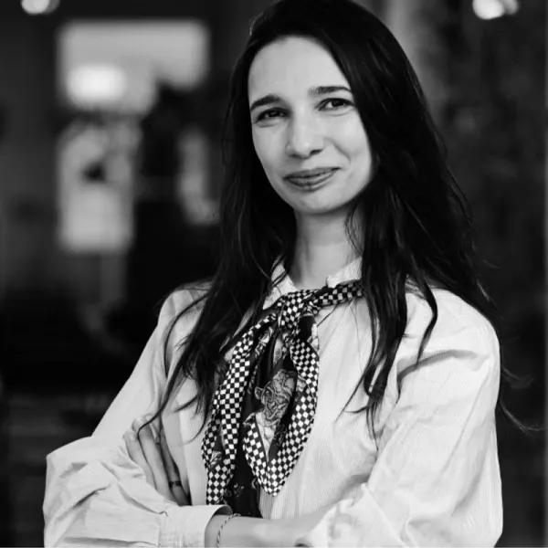
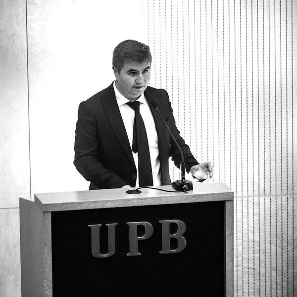

Built with Classiq
Built with Classiq
Quantum Codebreaking
Implement state‑of‑the‑art quantum cryptanalysis algorithms, the ones that threaten today’s public‑key cryptosystems.
Breaking the Boundaries of Quantum Uncertainty

The first BreaQ took place in November 2025: talks by leading researchers, a hands‑on lab visit, online workshops and a 24‑hour hackathon. This page keeps the full programme, the speakers and the photos.
Researchers and industry experts on quantum computing, communication and sensing, from the foundations to real applications.
Twenty‑four hours of hands‑on challenges in quantum algorithms, quantum hacking and quantum machine learning, with mentors and prizes.
Meet fellow enthusiasts, collaborators and future employers. Connections that last beyond the event horizon.







Hover or tap a portrait to reveal who is behind it. Compare with the flip version
Senior Researcher (CS I) in Quantum Technologies, Horia Hulubei National Institute of Physics and Nuclear Engineering (IFIN-HH)
Talk · 15 NovCybersecurity: before and after the quantum apocalypse
Senior Researcher (CS II), Extreme Light Infrastructure-Nuclear Physics (ELI-NP)
Talk · 15 NovBreaking the standard quantum limit: quantum metrology and the brave new non-classical worldRegional Director Balkans, Hungary, Czech and Slovakia, Fsas Technologies (a Fujitsu company); Co-founder, CPO and Board Member, Apollo AI Technologies; Owner, AMODENT SRL
Talk · 15 NovFujitsu’s Quantum Mindset: Innovation Through Collaboration
Business Development Manager, Qruise
Online talk · 20 NovBridging the simulation-reality gap in quantum computingProfessor at Department of Physics, Faculty of Applied Sciences, Bucharest National Polytechnic University of Science and Technology (UNSTPB)
Lab visit · 17 NovQuantum Optics in Action: Bridging Theory and ExperimentCryptography Expert, Advanced Technologies Institute
Talk · 15 NovMastering ImperfeQtion: From Theory to Practice in the Quantum WildLead Research and Development Scientist, Quantinuum, Quantum Software Research Theory team, Cambridge
Talk · 15 NovComputational quantum advantage for dynamical simulationsQuantum Computing Researcher, German Aerospace Center; PhD Candidate, Leibniz Universität Hannover
Talk · 15 NovFast gradient-free optimization of excitations in variational quantum eigensolvers
CEO Innovailia; PhD Candidate, Leibniz Universität Hannover
Talk · 15 NovHybrid benchmarking of quantum algorithmsPhD Candidate in Quantum Information, Oxford University
Talk · 15 NovWeak Values: Interpretations to Applications
Computer Science Engineer, Special Telecommunications Service
Talk · 15 NovPost-Quantum Cryptography: NIST Standardization and the Mathematics Behind It
Research Assistant, Technical University of Munich

Quantum Machine Learning Researcher, AIMultimediaLab; PhD Candidate, Bucharest National Polytechnic University of Science and Technology (UNSTPB)
Talk · 15 NovQuantum Machine Learning for Image Classification: Challenges and Perspectives
Telecommunications Engineer, Special Telecommunications Service; PhD Candidate, Bucharest National Polytechnic University of Science and Technology (UNSTPB)
Talk · 15 NovQuantum Hacking: Securing the Future of Quantum Systems
Research and Development Expert, Advanced Technologies Institute
Introducing RoQTeam.
Quantum computers will soon be powerful enough to break current public-key infrastructure. This will compromise critical infrastructures, mobile banking, software updates, blockchain and digital signatures, among others. How to prevent this incoming Quantum Apocalypse? I will talk about recent developments in quantum cryptography and the development of the future quantum internet.
Hybrid benchmarking is an alternative way to asymptotic worst-case analysis, gauging the performance of a fault tolerant quantum hardware platform for solving real-world instances of optimisation problem. The overall strategy is to evaluate how a quantum algorithm would perform under idealised assumptions and to identify the ranges where a quantum algorithm could potentially be useful. In this talk, I’ll present a methodology that goes beyond the asymptotic scaling for assessing the potential performance of quantum algorithms in ideal conditions.
Simulating quantum systems is a central challenge in physics and one of the most promising applications of quantum computers. Today’s quantum hardware can already tackle problems that stretch the limits of classical simulation. This talk gives an accessible overview of the capabilities and limitations of near-term quantum computing, the importance of benchmarking in characterizing performance, and the role of error correction in future scalability. In particular, I will discuss a digital dynamical simulation of a 2D quantum magnetism model on the 56-qubit trapped-ion Quantinuum H2 device. Using combined error suppression and mitigation techniques, we observe Floquet pre-thermalisation at timescales where state-of-the-art classical simulations become extremely difficult, if not infeasible for the particular setting considered.
This talk reviews weak measurements and post-selection with a focus on how weak values are interpreted and used in modern applications. I synthesize two strands that often talk past each other: (i) instrumental uses such as weak-value amplification and minimally invasive inference via weak-valued conditionals, and (ii) recent interpretational claims that treat weak values as properties of the system rather than of the meter.
The shot-noise limit (SNL), also called the standard quantum limit (SQL), is a classical bound that limits the precision when it comes to parameter estimation. With the advent of quantum metrology, the SQL is not anymore a fundamental limit. Indeed, by venturing into the quantum regime one is able to reach the so-called sub-SNL regime. Thus, by taking advantage of this new regime, more precise measurements become possible. As extreme examples of quantum metrology we discuss the success of gravitational wave astronomy by employing squeezed states as well as microscopy at the Heisenberg limit by using highly entangled photons.
Finding molecular ground states and energies with variational quantum eigensolvers is central to chemistry applications on quantum computers. Physically motivated ansätze based on excitation operators respect physical symmetries, but existing quantum-aware optimizers, such as Rotosolve, have been limited to simpler operator types. To fill this gap, we introduce ExcitationSolve, a fast quantum-aware optimizer that is globally-informed, gradient-free, and hyperparameter-free. ExcitationSolve extends these optimizers to parameterized unitaries with generators $G$ of the form $G^3=G$ exhibited by excitation operators in approaches such as unitary coupled cluster. ExcitationSolve determines the global optimum along each variational parameter using the same quantum resources that gradient-based optimizers require for one update step. We provide optimization strategies for both fixed and adaptive variational ansätze, along with generalizations for simultaneously selecting and optimizing multiple excitations. On molecular ground state energy benchmarks, ExcitationSolve outperforms state-of-the-art optimizers by converging faster, achieving chemical accuracy for equilibrium geometries in a single parameter sweep, yielding shallower adaptive ansätze and remaining robust to real hardware noise. By uniting physical insight with efficient optimization, ExcitationSolve paves the way for scalable quantum chemistry calculations.
Quantum technologies promise revolutionary advances in communication, computation, and sensing, but their real‑world implementations are not immune to attack. This talk surveys the emerging field of quantum hacking, highlighting vulnerabilities in devices, algorithms, and communication protocols. From side‑channel leaks and imperfect detectors to protocol manipulation and algorithmic tampering, we will explore how adversaries can exploit these weaknesses, and why building resilient, trustworthy quantum systems is essential for the future.
Cryptographers and security practitioners are much more concerned nowadays with reducing the distance between the theory behind cryptographic algorithms and their implementations. Even though there is always a gap between theory and practice, an imperfection so to say, we advance in science through the pursuit of superiority and, thus, there's always room for improvement. The presentation aims at setting the stage for a security mindset in a quantum world.
This presentation reviews NIST’s progress toward post-quantum cryptography, covering the open call for proposals, the multi-round public evaluations, and the criteria used to select candidate algorithms for standardization. It highlights key milestones, such as the release of draft FIPS for PQC after several evaluation rounds, and summarizes ongoing work on additional signature schemes and on practical guidance for migration from quantum-vulnerable systems. Emphasis is placed on security objectives, expected timelines, interoperability, and concrete preparation steps.
Image classification has been transformed by classical neural networks and advances in computational hardware, motivating the exploration of quantum-enhanced learning models. Quantum machine learning is expected to provide advantages in generalization, representation efficiency, and optimization by leveraging high-dimensional Hilbert spaces and quantum correlations. Both purely quantum neural networks and hybrid quantum–classical models offer distinct pathways toward this goal: the former promise fundamentally new computational paradigms, while the latter enable practical integration of quantum resources within established frameworks. This work examines the comparative advantages and limitations of these approaches in the context of image classification and outlines key challenges and research directions for advancing quantum-enabled learning systems with near-term technology.
Participants will explore the quantum optics lab in two teams organized in advance through the Discord channel, respecting the specified time of arrival.
To be announced.
The performance of quantum devices often falls short of their theoretical design due to complex, interacting noise sources and imperfect calibrations. Qruise addresses this challenge by developing advanced software tools that close the gap between simulated models and real hardware behavior.
Our core products (QruiseOS and QruiseML) provide an integrated environment for control, orchestration, and learning across heterogeneous quantum platforms. QruiseOS ensures flexible and hardware-agnostic system operation, while QruiseML leverages differentiable digital twins and machine learning to extract hidden parameters, accelerate calibration routines, and systematically optimize gate performance.
By combining physics-informed modeling with data-driven inference, Qruise enables quantum hardware teams to achieve higher fidelities, faster development cycles, and deeper insight into device dynamics, ultimately paving the way toward scalable, fault-tolerant quantum computing.
All times are Bucharest time (EET, UTC+2).
Built with Classiq
Implement state‑of‑the‑art quantum cryptanalysis algorithms, the ones that threaten today’s public‑key cryptosystems.
 Built with PennyLane
Built with PennyLane
Encode data in quantum feature spaces and test where quantum models beat classical ones on a classically hard dataset.
 Quantum hacking
Quantum hacking
Exploit real‑world imperfections in quantum devices, algorithms and protocols to show that even quantum is not unbreakable.
Talks at the Military Technical Academy, a quantum optics lab visit, online workshops and a 24-hour hackathon at CAMPUS: this is what the first BreaQ looked like in November 2025.


15 Nov · Presentations
Bulevardul George Coşbuc nr. 39-49, Sector 5, București, 050141
17 Nov · Lab visit · 22–23 Nov · Hackathon
Splaiul Independenței nr. 313, Sector 6, București, 060042
BreaQ 2026 is in preparation. Dates, speakers and the programme are announced on the BreaQ 2026 page.
BreaQ 2026